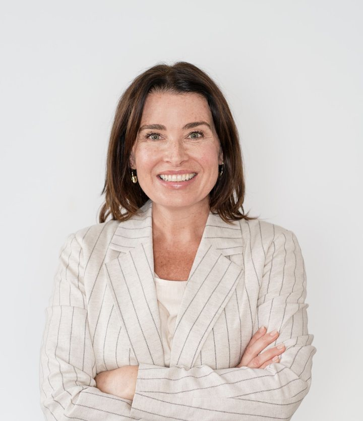

London · UK and US engagements
I join growing, listed, PE-backed and not-for-profit organisations as a fractional member of the finance leadership team. ERP programmes taken through go-live, and controls that survive an audit. When I leave, the finance team can run the process without me. Usually one to two days a week.

How I can help
Three things businesses usually call me for. Most engagements start with one and widen.
Track record
Defined a target operating model, moved paper-based processes to electronic, trained staff on the new processes, and recommended further automation, including AI, to build on the change.
Process and reconciliation redesign, SOPs, controls uplift and gaps and risk registers, with training so the team owns the process and is audit-ready.
Reconciliation, payroll and accounts payable workstreams, with a findings and risk register across governance and operations.
Led the ERP selection and the early Sage to SAP migration, then project managed it through to go-live, including the finance data migration. Built the Finance PMO and governance framework, designed the To-Be finance processes and roles, and integrated newly acquired labels into group reporting without breaking continuity.
Owned the SOX compliance programme for seven years with zero financial statement issues, and saved $500k a year by insourcing the internal audit and SOX function. Built the SOX self-assessment framework across multiple entities and carried controls through the Cost Plus acquisition.
Senior Manager. SOX-aligned controls documentation, internal audit and IPO readiness for US-listed clients across the UAE, plus the regional risk assurance strategy. Directed large global internal audit programmes and built the approval workflows used across 200+ professionals.
Business advisory and business improvement across three countries, including the finance operations manual for a shared services function aligned to a new finance system, and the internal training that went with it.
References
“…we worked together on a range of complex risk and controls engagements, including SOX program design, execution and management, IPO readiness, and the development and implementation of internal audit frameworks. … I would gladly recommend Danielle to any organization looking for an experienced, collaborative professional who can strengthen controls, improve processes, build trusted relationships, and help navigate complex transformation.”
Stephanie Roberts, COO. Former PwC manager
“Danielle helped me immensely during my time as Project Director at Banijay UK. She has a great ability to build trusting working relationships with stakeholders and peers, which other than getting the job done, helps foster an open and collaborative culture.”
Emma Jenkinson, Project Director, Banijay UK
“I worked with Danielle at PwC in Abu Dhabi and always valued having her on the team. She brought real rigour to controls and internal audit work, combined with the practical judgement to know where the risk actually sits. She was collaborative and someone colleagues relied on. Any organisation strengthening its finance controls or running a transformation would be well served by her.”
Dr Ahmed Shawky, CEO, SustainGRC. Former PwC colleague
“She is incredibly organised, dependable and particularly strong at stakeholder management, keeping people aligned and projects moving even when priorities are complex. … She builds genuine relationships with people and brings a calm, collaborative and positive approach to her work.”
Ayo Ayoola, Finance Systems Specialist. Colleague on two Banijay UK transformation projects
How to engage
Three models, depending on whether you need ongoing seniority, a defined piece of work, or cover for a period.
One day a week, ongoing. Senior finance leadership without carrying a full-time hire. Two days a week scales from £6,000.
From £3,500 / month
Defined scope: A controls review, SOX readiness assessment, ERP advisory, or a finance operations review.
Quoted by project
Full time for a defined period. A transformation sprint, go-live support, or cover while you recruit.
Day rate on request
Engaged through Danielle McCurdy Consulting Ltd, outside IR35. Remote first, with on-site time where the programme needs it.
How I work
I work hands-on rather than from a slide deck. I build the bottom-up plan and the status reporting, design the to-be processes, and stay close to UAT and cutover, so leadership can see where the programme really stands and the finance team owns the process after go-live.
American, London-based for eight years, which brings SOX and US GAAP depth alongside UK statutory reporting. MBA in international business and finance. Certified Scrum Master. Fluent Spanish.
Contact
If I'm not the right person for it, I'll say so and point you at someone who is.